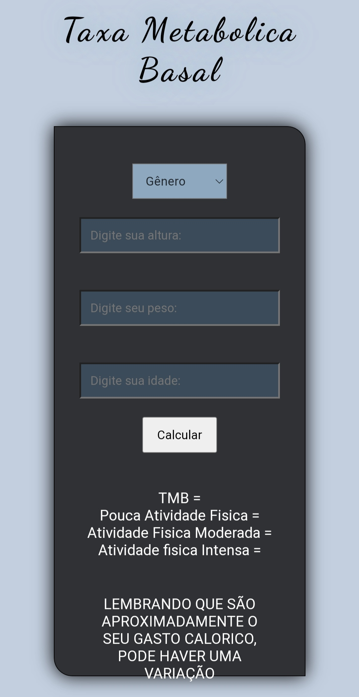

Bem vindo ao meu Portfolio.
Me chamo Matheus Braga Carraro Pedrosa e sou técnico em Automação Industrial e Desenvolvedor.
Tenho pratica em desenvolvimento web (HTML, CSS, JS) e Programação PLC | Noção em segurança da informação | Experiência em Arduino (Montagem, programação, componentes eletrônicos) | CNH categoria B.

Taxa Metabolica Basal (TMB)
O projeto foi realizado para testar os conhecimentos em HTML, CSS e JS e utilizá-lo para realizar cálculos da TMB, que é usada para calcular a dieta das pessoas conforme o gasto calórico.